Word Problems¶
One variable equations¶
Qiang drives 15 miles at an average speed of 30 miles per hour. How many additional miles will he have to drive at 55 miles per hour to average 50 miles per hour for the entire trip?
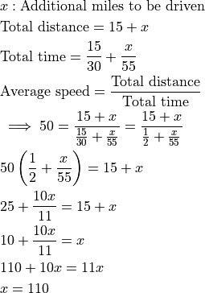
On a trip to the beach, Anh traveled 50 miles on the highway and 10 miles on a coastal access road. He drove three times as fast on the highway as on the coastal road. If Anh spent 30 minutes driving on the coastal road, how many minutes did his entire trip take?
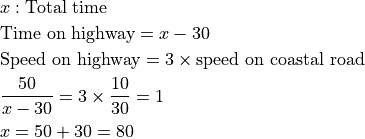
Jeremy’s father drives him to school in rush hour traffic in 20 minutes. One day, there is no traffic, so his father can drive him 18 miles per hour faster and gets him to school in 12 minutes. How far in miles is it to school?
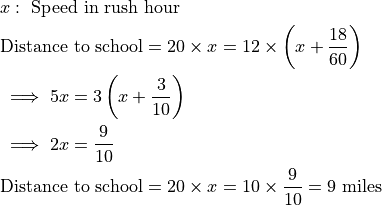
The clock in Sri’s car, which is not accurate, gains time at a constant rate. One day as he begins shopping, he notes that his car clock and his watch (which is accurate) both say 12:00 noon. When he is done shopping, his watch says 12:30 and his car clock says 12:35. Later that day, Sri loses his watch. He looks at his car clock and it says 7:00. What is the actual time?
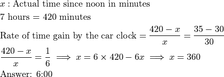
Each day for four days, Linda traveled for one hour at a speed that resulted in her traveling one mile in an integer number of minutes. Each day after the first, her speed decreased so that the number of minutes to travel one mile increased by 5 minutes over the preceding day. Each of the four days, her distance traveled was also an integer number of miles. What was the total number of miles for the four trips?
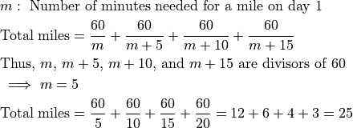
George walks 1 mile to school. He leaves home at the same time each day, walks at a steady speed of 3 miles per hour, and arrives just as school begins. Today he was distracted by the pleasant weather and walked the first 1/2 mile at a speed of only 2 miles per hour. At how many miles per hour must George run the last 1/2 mile in order to arrive just as school begins today?
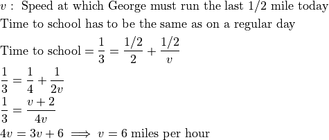
Two variable equations¶
Starting with some gold coins and some empty treasure chests, I tried to put 9 gold coins in each treasure chest, but that left 2 treasure chests empty. So instead I put 6 gold coins in each treasure chest, but then I had 3 gold coins left over. How many gold coins did I have?
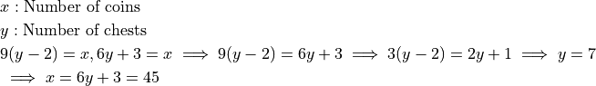
Recursive equations¶
Gilda has a bag of marbles. She gives 20% of them to her friend Pedro. Then Gilda gives 10% of what is left to another friend, Ebony. Finally, Gilda gives 25%$ of what is now left in the bag to her brother Jimmy. What percentage of her original bag of marbles does Gilda have left for herself?
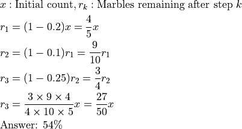
Hui is an avid reader. She bought a copy of the best seller Math is Beautiful. On the first day, Hui read 1/5 of the pages plus 12 more, and on the second day she read 1/4 of the remaining pages plus 15 pages. On the third day she read 1/3 of the remaining pages plus 18 pages. She then realized that there were only 62 pages left to read, which she read the next day. How many pages are in this book?
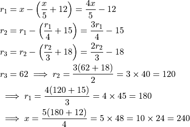
Easy equations that look daunting¶
The equation
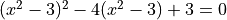
looks daunting. However, setting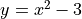
gives us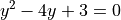
that results in
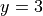
andFurther,
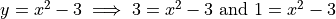
. Both equations can be solved easily.